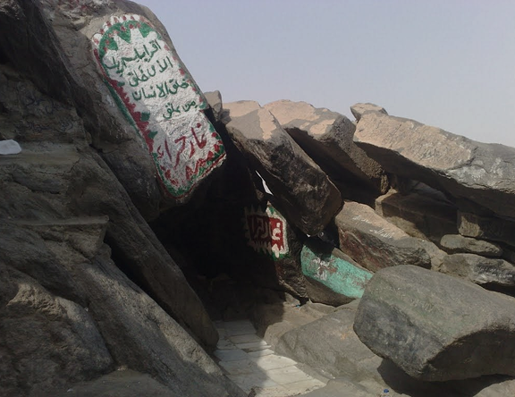
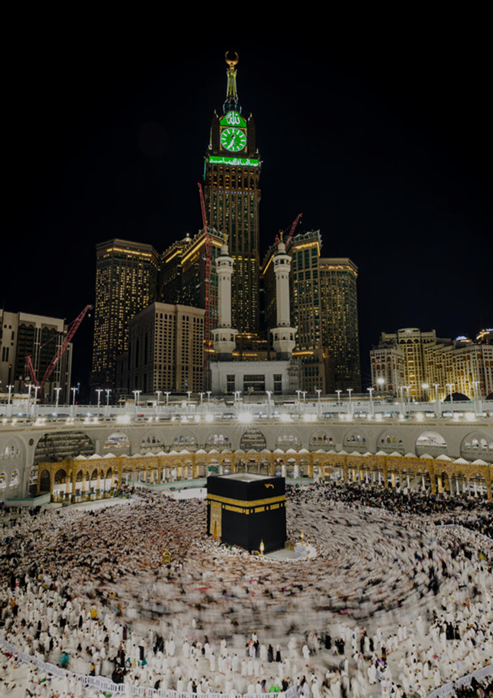
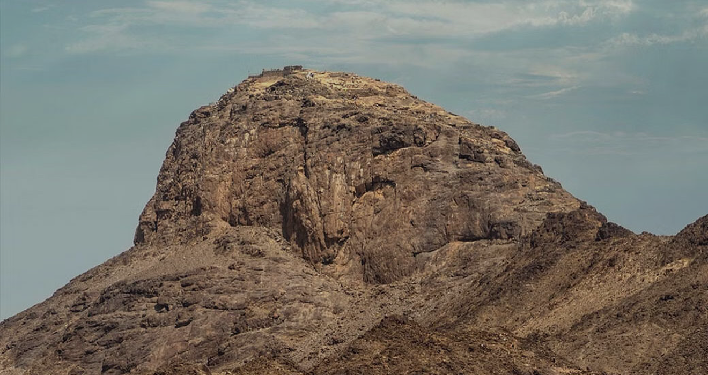

أهلا بضيوف الرحمن.
يقع غار حراء على قمة جبل النور شمال شرق مكة المكرمة ويقدر ارتفاع الجبل 634م. الغار ضيق جدا لا يتسع لأكثر من 3 أشخاص جلوسا. كان نبينا الكريم محمد ﷺ يختلي فيه قبل البعثة الليالي ذوات العدد وخاصة في رمضان للتفكير والتأمل في ملكوت الله في السموات والأرض بعيدا عن الناس، وكان قد حبب إليه الخلاء.
ومما يتميز به هذا المكان أمور من أهمها:
أنه بعيد عن ضوضاء الناس وإزعاجهم فالجبل صعب الصعود والطريق عقبة كؤود، وهو يبعد عن الكعبة حوالي 4 كيلو متر، وكذلك توجد فتحة في الناحية الغربية من الغار ترى منها الكعبة المشرفة فكان هذا مدعاة للتأمل فيه والتفكر. وفي هذا المكان الموحش وفوق قمة ذلك الجبل الوعر بدأت بعثة النبي الكريم ﷺ ونزلت عليه أول آيات القرآن (اقرأ باسم ربك الذي خلق) ثم رجع إلى خديجة رضي الله عنها خائفا فزعا من هول ما رأى وهو يقول: «زملوني زملوني، دثروني دثروني» صلى الله عليه وعلى آله وصحبه وسلم تسليما كثيرا إلى يوم الدين.

أخي المسلم، أختي المسلمة:
(قاصدي غار حراء)
إن مطالعة المسلم ومعرفته بسيرة النبي ﷺ أمر له أهميته لنتمثله قدوة لنا في سائر أحواله وشؤونو، لكن الذي ليس من الدين ولا جاء به الشرع المطهر بل ورد النهي عنه ما قد يشاهد يفعله بعض الزائرين -هدانا الله وإياهم- من أمور مخالفة لما جاء به النبي ﷺ من هداية وإرشاد، كالذين يتمسحون بالأحجار ويتبركون بالأشجار أو الذين يقبلونها ويلعقونها أو غيرها من الأفعال المنكرة. فهل فعل الرسول ﷺ شيئاً من ذلك أو أمر به أو فعله من بعده صحابته الكرام رضي الله عنهم كلا وألف كلا، وأعظم من ذلك كله إثماً من يستغيثون بغير الله عز وجل، ففي وصية النبي ﷺ لابن عباس رضي الله عنهما قال له «يَا غُلَامُ احْفَظْ اللَّهَ يَحْفَظْكَ، احْفَظْ اللَّهَ تَجِدْهُ تُجَاهَكَ، إِذَا سَأَلْتَ فَسَلِ اللَّهَ، وَإِذَا اسْتَعَنْتَ فَاسْتَعِنْ بِاللهِ....»
من أجل ذلك وجب علينا جميعاً النصيحة لهم والإنكار عليهم لقول النبي ﷺ «مَن رأى منكم منكراً فليغيّره بيده فإن لم يستطع فبلسانه فإن لم يستطع فبقلبه وذلك أضعف الإيمان» رواه مسلم.
وهذا من حق المسلم على المسلم، ومن امتثال العبد لأمر ربه جل وعلا في سورة العصر (إلا الذين آمنوا وعملوا الصالحات وتواصوا بالحق وتواصوا بالصبر).
كما أن بعض الناس يقصد غار حراء عند زيارته لحج أو لعمرة أو لغير ذلك، ويتجشم المشاق ويركب الصعاب ويتعب نفسه في عمل يظن أنه قربة عند الله، وليس الأمر كذلك، بل مثل هذا يتعب نفسه بما لا قربة فيه ولا طاعة لله بل وقع فيما نهى الله عنه. والبعض منهم هداهم الله يقوم ببعض الأفعال التي تنافي دعوة التوحيد التي جاء بها رسول الله ﷺ، أو يمارس بعض البدع المحدثة التي تقدح في كمال الإيمان.
وقد كان رسول الله ﷺ يتعبد لله في غار حراء قبل نزول الوحي عليه من السماء، وبعد تتابع نزول الوحي لم يقصده لا للدعاء ولا للصلاة ولا لغير ذلك. وقد مكث في مكة نحو 13 عاماً لم يثبت عنه أنه قصد حراء ولا غيره من الأماكن التي يظن بعض الناس أن زيارتها مستحبة وقربة إلى الله.

إن الموضع الوحيد في مكة الذي يشرع قصده للعبادة والصلاة والدعاء هو المسجد الحرام فقط. أما المشاعر التي يحج إليها الحاج: عرفة ومنى ومزدلفة، فإنه لا يشرع قصدها إلا في أيام الحج المعلومة لكل مسلم، وهذا لا يكون إلا في الأيام المخصوصة، وفق ما شرعه الله لا تقديم فيها ولا تأخير. وإنما يقصد المسجد الحرام فقط، ولا حد لوقته، كما صح في الحديث «يا بني عبد مناف لا تمنعوا أحداً طاف بهذا البيت وصلى أية ساعة شاء من ليل أو نهار». رواه أصحاب السنن.

أخي المسلم العزيز إذا كانت المناسك الثلاثة عرفة ومنى ومزدلفة والجمرات التي شرعها الله تعالى للناس من زمن إبراهيم عليه السلام، وقيل: من عهد آدم مخصوصة بزمان وحال معين، فكيف يصح أن يخترع الناس أماكن أخرى يقصدونها للعبادة والقربة، ويجعلون أوقاتها مطلقة لمن شاء في كل زمان، كغار حراء وغيره؟. وبعد هجرة النبي ﷺ قصد مكة عدة مرات، ولم يأت غار حراء ولا لحظة واحدة، ولو كان مشروعاً وقربة لقصده. ولكان هو أولى الناس بقصد حراء لأنه كان يتعبد فيه قبل النبوة، وله في حراء ذكرى عظيمة لم تحصل لأحد قبله ولا بعده. ومعلوم أن النبي ﷺ اعتمر عمرته الرابعة مع حجة الوداع، وعج معه جماهير المسلمين، لم يتخلف عن الحج معه إلا من شاء الله. وهو في ذلك كله، لا هو ولا أحد من أصحابه رضي الله عنهم صعد إلى غار حراء، ولا زاره، ولا شيئاً من البقاع التي حول مكة، ولم يكن هناك عبادة إلا بالمسجد الحرام وبين الصفا والمروة و بمنى والمزدلفة وعرفات ثم بعد خلفاؤه الراشدين وغيرهم من السابقين الأولين، لم يكونوا يسيرون إلى غار حراء ونحوه للصلاة فيه والدعاء أو التبرك. ولو كان هذا مشروعاً مستحباً يثيب الله عليه؛ لكان النبي ﷺ أعلم الناس بذلك وأرغب فيه ممن بعدهم، فإذ لم يفعلوا شيئاً من ذلك ؛ عُلم أنه من البدع المحدثة المنهي عنه شرعاً وديناً ، فمن عصى بعد ذلك وجعلها عبادة وقربة وطاعة، فقد اتبع غير سبيلهم، وشرع من الدين مالم يأذن به الله، قال سبحانه (لَقَدْ كَانَ لَكُمْ فِي رَسُولِ اللَّهِ أُسْوَةٌ حَسَنَةٌ لِّمَن كَانَ يَرْجُو اللَّهَ وَالْيَوْمَ الْآخِرَ وَذَكَرَ اللَّهَ كَثِيرًا)